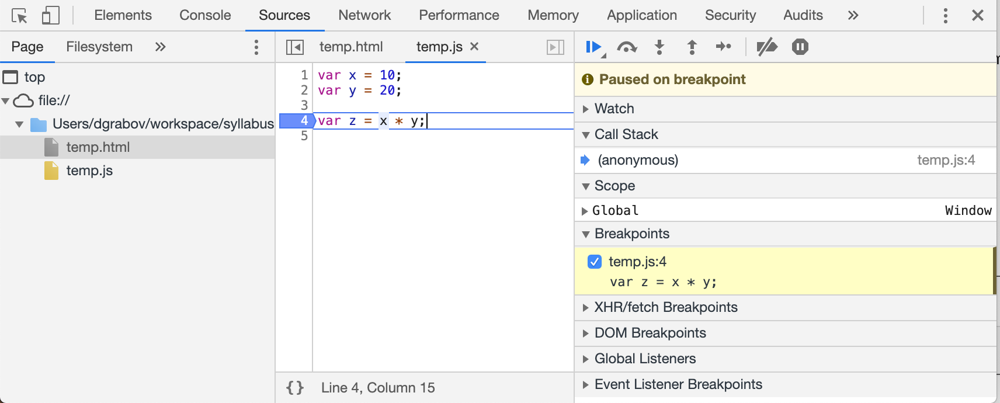
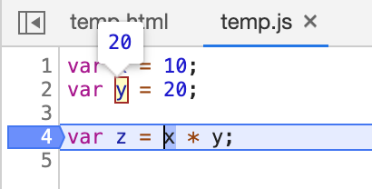
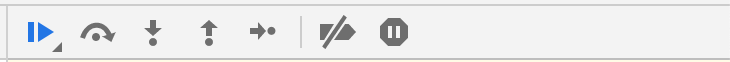

JavaScript Core III - Week 1
Teaching this lesson?
Read the Mentors Notes here
Learning Objectives
- The learner should understand the value of thorough and comprehensive debugging
- The learner should be able to use error messages to debug simple logical or syntactical errors in their code
- The learner should be able to logically step through their code to find bugs and errors
- The learner should be able to predict where a program will fail
- The learner should be able to modify an existing program to solve errors
Agenda
The purpose of this class is to introduce to the student:
- Debugging your code
- Consolidate learning for the project work
1. Debugging
Vocabulary
Syntax&SyntacticalBugError
Why is Debugging Important?
When are projects are very small it's easy to see the problems and when something does break it's not to much of an issue. This isn't true when we start working on larger projects.
The code that we write has real world uses and real world effects.
Y2K Bug
In 1999 the world faced a possibly very serious bug in the way that computer stored time. When computers stored the year they would only store the last two digits (e.g. 1999 is stored as just 99). This means that when the year 2000 happened lots of people were afraid that computer would think the year was the year 1900 instead of the year 2000.
Check out this very scary video here
Fortunately, a lot people put in a lot of work to stop the bug before it happened and averted catastrophe.
Discuss: Why did the Y2K bug happen? What oversights did the developers have?
Therac-25
Therac-25 was a machine used to administer radiation to cancer patients which malfunctioned because of a programmer error.
Watch: You can watch a quick video about the bug here
Discuss: Why did the Y2K bug happen? What oversights did the developers have?
The Debugging Mindset
Debugging is a fact of life! Not everything will work the first time you do it and even when it does there will often be times when even if you feel like you've covered everything another bug may occur!
Task (5 Minutes) In teams, the students should have quick discussion about the bugs that have occurred to them in the past. When they finish the class should regroup and gather together all the different types of bugs that have happened to them.
Types of Errors
Syntax Errors
These errors are usually quite simple to fix and happen when you've typed some code wrong or missed a character. These will normally happen as soon as you run your code.
Examples of Syntax Errors
How would we fix these syntax errors? Post your answers in Slack!
SyntaxError: missing ) after condition
if (3 > Math.PI {
console.log("wait what?");
}
SyntaxError: missing variable name
var = 1;
SyntaxError: missing } after function body
var charge = function() {
if (sunny) {
useSolarCells();
} else {
promptBikeRide();
};
Reference Errors
These errors most commonly happen when you try to access variable that has not been defined anywhere.
Examples of Reference Errors
How would we fix these reference errors? Post your answers in Slack!
ReferenceError: "word" is not defined
var ward = "hello";
word.substring(1);
Type Errors
Type errors usually occur when you are trying to access a method or variable from an object that doesn't have that in it.
Examples of Type Errors
TypeError: document.getElByID is not a function
var submit = document.getElById("button");
TypeError: numbers.map is not a function- Hint: what
typeis the number variable
- Hint: what
var numbers = { a: 13, b: 37, c: 42 };
numbers.map(function (num) {
return num * 2;
});
TypeError: Cannot read property 'substring' of undefined
var name;
name.substring(1);
The Debugging Framework
When debugging you should always ask yourself a few key questions
- What did I expect to happen?
You should very clearly be able to say exact what you expected to happen when you run your code. If you cannot do this, then you do not understand the problem well enough.
- Is it actually broken?
Sometime what you think is broken is actually working fine but not what you thought was going to happen. You should confirm with what the program is trying to do.
- What happened instead?
You should be able to quickly state what you were expecting to happen. Just saying "It Didn't Work" isn't enough! The more carefully you dissect the problem the more easily you'll be able to fix it.
- What have I tried so far?
Debugging is a process of loops and iteration. Think about what you've done so far and work out other ways that the code could have broken.
Tools
Task (5 Minutes)
In teams, the students should have quick discussion about the ways that they have solved bugs or errors they've had in the past.
When they finish the discussion we should regroup and gather together all the ways that they have solved bugs in the past.
Thinking like a computer
The most important skill you can develop is thinking analytically and logically - exactly the same as a computer. In the exercises soon we will be using our logical skills to slowly step through a program to see what is going wrong.
Remember that the computer will run your program line-by-line, from top to bottom, and that loops and functions may jump to a new location. If in doubt, try going through the program one line at a time - don't jump ahead, or guess what you want your program to do, make sure you're reading what it actually does do.
When debugging, it can often be useful to write down what values variables have, either on paper, in comments, or by using console.log - this is particularly true in loops and functions, where variable values may change from iteration to iteration, or between calls!
Test Often
It is important when working on your code to test each part of your code separately and carefully. Make sure everything is working before you move on to the next part otherwise problems become harder to debug.
Stackoverflow.com
Stackoverflow is a crucial tool for lots of new developers in finding answers to their programming problems. While a lot of the information is very good there are several points to keep in mind.
- Information goes out of date very quickly
- You have to make sure that what your looking at it new
- Don't copy and paste code
- If you don't understand what your code does then there is no pointing using it since soon you won't be able to debug it
- The Chosen Answer isn't always the right answer for you
- Always read all the responses to questions to find the correct answer for you
Talking It Through (a.k.a Rubber Ducking)
When you're stuck on a problem one of the key techniques you can use is talking through your problem with somebody else. Being forced to slow down and think is important and you'll often realise your problem whilst trying to explain it so somebody else.
Nobody else around to ask? Still tell it to somebody! The act of talking helps you work through the problem. Traditionally, programmers use a rubber duck.
Using console.log() and the Console
By this point you will have seen console.log() quite a lot when we see what is happening in our programs - this tool can also be one of the key tools in debugging our programs!
When we're working on websites you can view the Console tool in Chrome by
- Right Click
- Inspect
- Click the
Consoletab
Here you'll see all of the messages that have been printed by the website when it was loading and running.
Using the Chrome Debugger
We know that JavaScript executes code line by line. How great would it be if we had a tool that allowed us to stop code execution on any line and inspect the values of our variables. Fortunately such a tool exists and it's called a debugger. Here we will use the Chrome debugger for JavaScript, however similar tools exist of all other popular browsers.
To view the debugger go to the Sources tab of Chrome developer tools which we opened above.
To tell the debugger to stop we need to create a breakpoint, it's an instruction to the debugger to stop execution and await instruction from us.
We can place a debugger in one of two ways. We can either insert a line into our called saying
debugger;
or we can click on the line number in the debugger tool itself.
Let's say we have a simple piece of code below and we want to inspect the values of x and y before adding them.
var x = 10;
var y = 20;
var z = x * y;
To use debugger on above code we will save it in a file called temp.js and import it into an html file called temp.html.
We can either use the debugger statement to pause the code
var x = 10;
var y = 20;
debugger;
var z = x * y;
or by opening the file in the debugger using the file navigation on the right hand side and clicking on line 4. Note you can pause on line with code not empty lines.

Once we have paused code execution, we can mouse over the the variables to see their values.

Once we have finished inspecting the values, we can use the controls in the top right corner to tell the debugger what to do.

We can click the button with the blue triangle to tell the debugger to continue executing code until it hits the next breakpoint. Or if we want to execute code line by line ourselves, we can press the button with the curved arrow that will the debugger to execute the current line and stop on the next line.
To remove a breakpoint you either remove the debugger statement or if you placed a breakpoint from the debugger itself, you can click that line number again to remove it.
Comparing console.log and debugger
As a developer you will likely use both tools to understand what your code is doing and help you fin and fix bugs. console.log can be a quick and easy way to check a value, but it can also be a bit inflexible since you can only inspect the value you log out in that one place.
Using the debug tool to inspect values can be a bit slower than console logging out values. However, it is also more flexible since you can inspect any value and move execution yourself line by line.
Try using both methods in your exercises and homeworks to get more familiar with them.
ESLint in VSCode
Often you will have code that is perfectly valid JavaScript, but it may possibly not do what you want it to do. For example, you might have misspelled a variable name and as a result the variable you wanted to using is now unused and the variable you using does not exist.
To catch such problems, we can use a static code analysis tool or commonly known as a linter. The most common one in use today is ESLint and it allows us to configure different rules to look out for and alert us when one of them is broken by our code.
You can use the ESLint extension for VSCode which you can download here.
We have created a sample ESLint configuration to help you get started. You can download it here.
{
"rules": {
"semi": ["warn", "always"],
"quotes": ["warn", "double"],
"eqeqeq": ["warn", "always"],
"no-unused-vars": ["warn"],
"no-redeclare": ["warn"],
"no-undef": ["warn"]
}
}
semi warns you if you did not use a semi colon at the end of the line
quotes ensures consistency by warning you if you did not use double quote marks
eqeqeq ensures you use === and !== rather than == and != since the latter can lead to errors
no-unused-vars will warn you if you have unused variables in your code
no-redeclare will warn you if you redeclare an existing variable
no-undef will warn you if you try to use an undeclared variable or function
You can see all rules and their explanations at https://eslint.org/docs/rules/. Many of them not make sense to you (they don't to me), but it can be a handy reference and over time your use and understanding of them will improve and increase.
Summary
- Bugs are a fact of life. No one produces bug free code.
- Test regularly to find bugs early.
- Having multiple bugs in code can make them harder to deal with. See previous rule
- Use tools such a linters spot and prevent bugs early
- Error messages might look scary, but they are your friend
- Use tools such as console.log and debugger to find root of bugs
Exercise 1
As a class we should step through solving all of the issues in this small piece of code. You should copy it into a code editor (e.g. VS Code) in a .js file so you can debug and run it easily. Be sure to use The Debugging Framework that we discussed earlier
let printValuesOf = (jsObject, keys) => {
for (let i = 0; i <= keys.length; i++) {
let key = keys[i];
console.log(jsObject[k]);
}
}
let simpsonsCatchphrases = {
lisa: 'BAAAAAART!',
bart: 'Eat My Shorts!',
marge: 'Mmm~mmmmm',
homer: 'd'oh!',
maggie: '(Pacifier Suck)',
};
printValuesOf(simpsonsCatchphrases, 'lisa', 'bart', 'homer');
// Expected console output:
// BAAAAAART!
// Eat My Shorts!
// d'oh!
// Returns undefined
Try to categorise the bugs found under:
- Logical
- Syntactical
- Other (programmer/user error)
Exercise 2
In your groups we want you to go through this program and find all of the bugs that are happening in this code.
You can find the project here
2. Project Work
Explanation
Over the next three weeks we're going to be building a website that will consolidate all of your knowledge so far in the course.
You can find the project here
Getting Setup
In your groups you should get the project setup using the exact instructions found here. Make sure you use your Teaching Assistants to help you!
Homework
- The repo contains few challenges - solve all the pending exercises in
week-7.